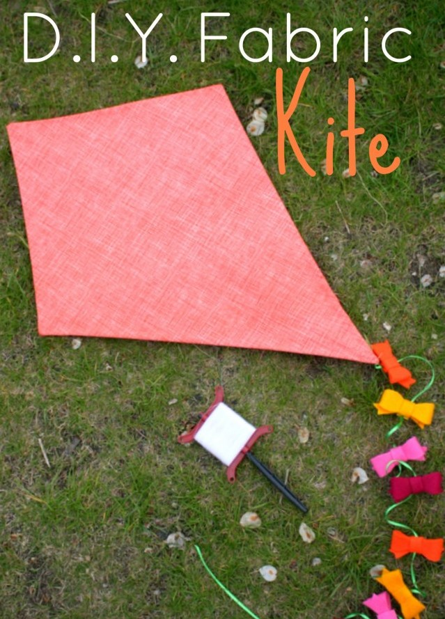

This DIY is perfect for a windy season and kids will surely enjoy using it. You can make it a memorable activit while doing this craft and you may spend more time with your family. This craft will require a help from an adult because some procedures are difficult for children. Your kids will have fun making this kite and they will surely have fun playing it! Below are the materials and procedures to make the Fabric Kite.